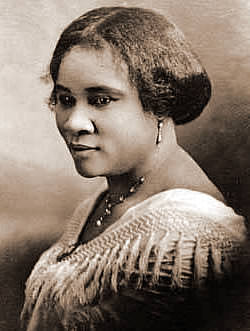

Biography
During her life, Sarah Breedlove was an entrepreneur who created specialized hair products
for African-American hair. She started the company Madam C. J. Walker Manufacturing
Company and became one of Americas first, self-made, female millionaire.
Most Americans during the late 1800’s early 1900’s did not have did not have indoor plumbing, central heating or electricity. As a result, people did not bath or wash their hair less as often as we do now. Because of this, many people suffered scalp disease causing hair loss. Sarah was also suffering and losing her hair. She tried out different home remedies to create a healthier scalp. She developed Vegetable Shampoo, Wonderful Hair Grower, and other beauty products for black women. Her husband was in advertising and thought it would help her get more business by going by a flashier name. That is how Sarah Breedlove became Madam C. J. Walker. In 1905 she traveled around the country to talk to women about her products and doing demonstrations to showcase their results. Women all around the country loved her creations. She established Madame C. J. Walker Laboratories to manufacture her beauty products. Her beauty products were sold to many women across the country.
Madam C. J. Walker used her success to help other African-Americans. She founded scholarships for black students and donated money to different African-American institutions. Walker also fought for for civil rights. Wanting women to have the same opportunities she's had, she opened a school called the Walker College of Hair Culture where women were trained to style hair, sell products, and even given the opportunity to open their own beauty salons. After she passed away, the company was in the hands of her daughter.